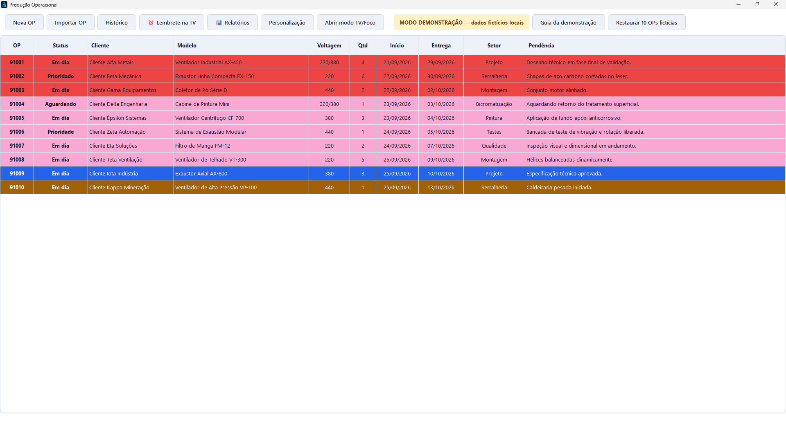
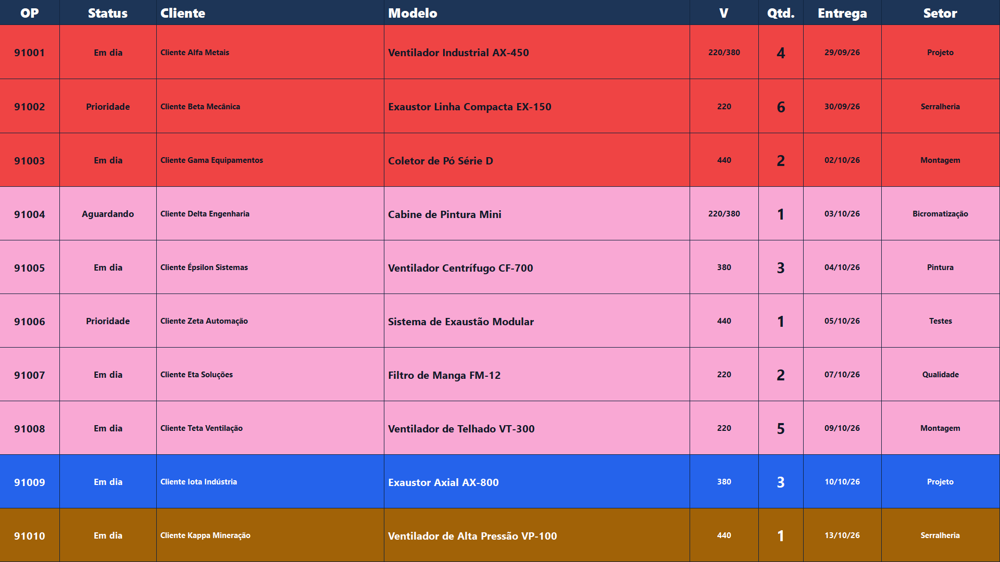
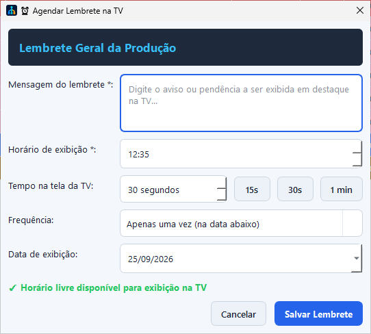
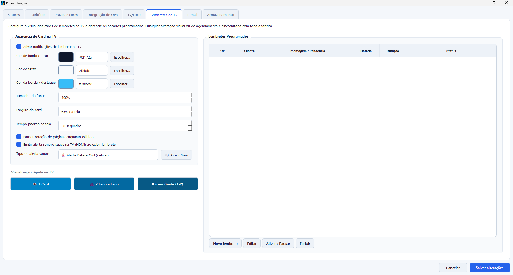
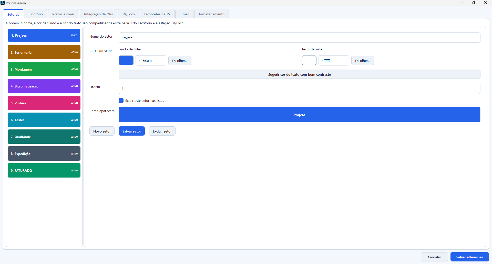
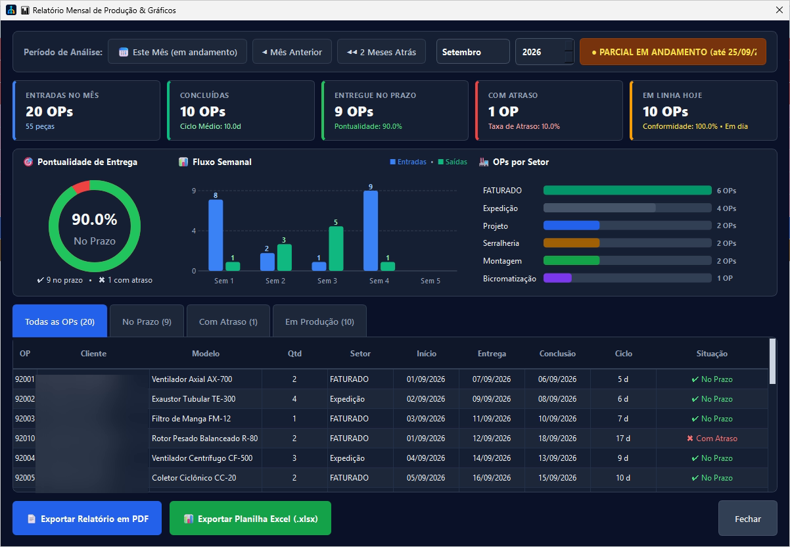

Problem
Production orders needed to be easy to follow in the office and factory without relying on constant manual checks or information scattered across documents.
PRODUCTION SYSTEM
IN PRODUCTIONWindows application · production · factory display
I deployed an application that organizes production orders across the office and factory. The TV shows scheduled reminders, and the team can export monthly reports as PDF or Excel.

APPLICATION SCREENS





Internal use
The system brings order tracking, TV reminders and reports together to support office and production teams.
Privacy
The demo uses fictional orders. Client names are blurred in the report capture; operational databases, documents and settings are not included.
Production orders needed to be easy to follow in the office and factory without relying on constant manual checks or information scattered across documents.
A Windows application with order entry, history, configurable production areas, a TV/Focus display, reviewable imports and an isolated demo mode.
The team sets the message, day, time, frequency and display duration. The reminder appears on the TV/Focus display to support communication during the shift.
I choose a month to review indicators, charts and order progress; the report can be exported as PDF or Excel.
Continuity
The local cache helps TV/Focus keep showing the last valid read during temporary source outages.
Decision and trade-off
The Windows app and configurable SQLite fit the installed workstations. A multi-site expansion would require revisiting identity and centralized persistence.
This case describes the application in use at the company and shows a public demo with fictional orders and client names hidden in the report screen.